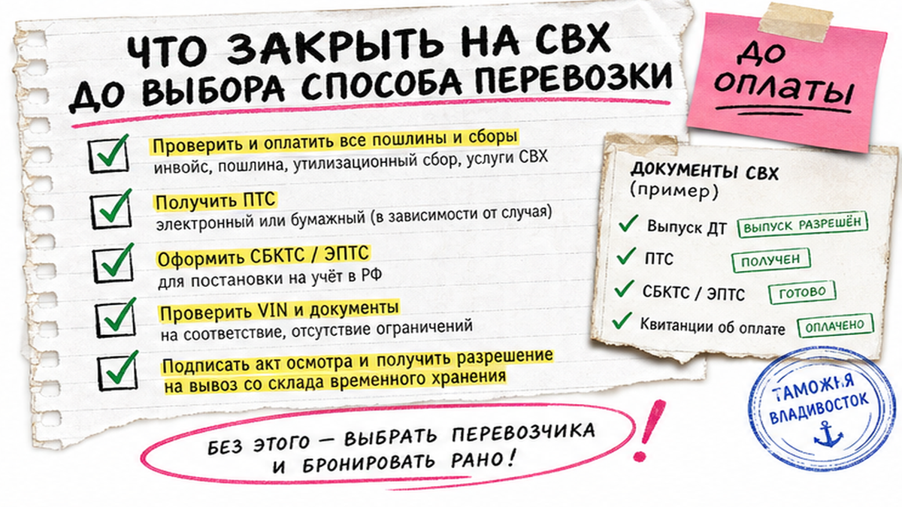
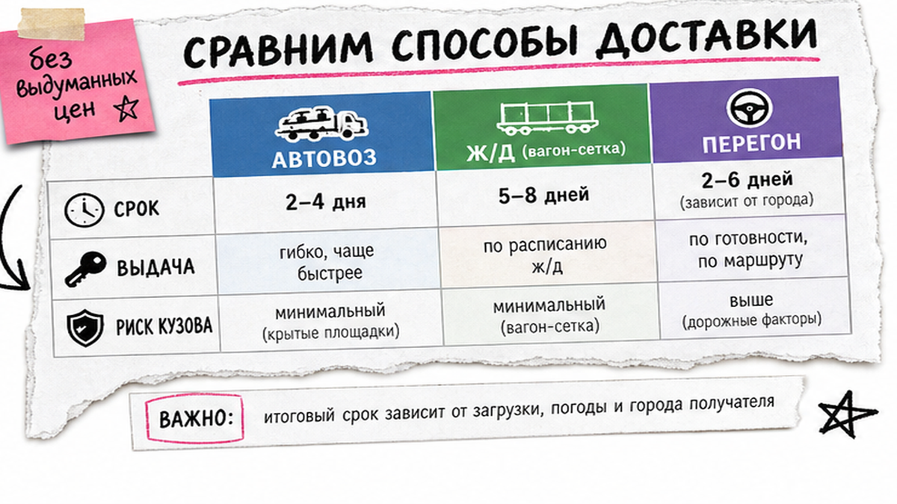
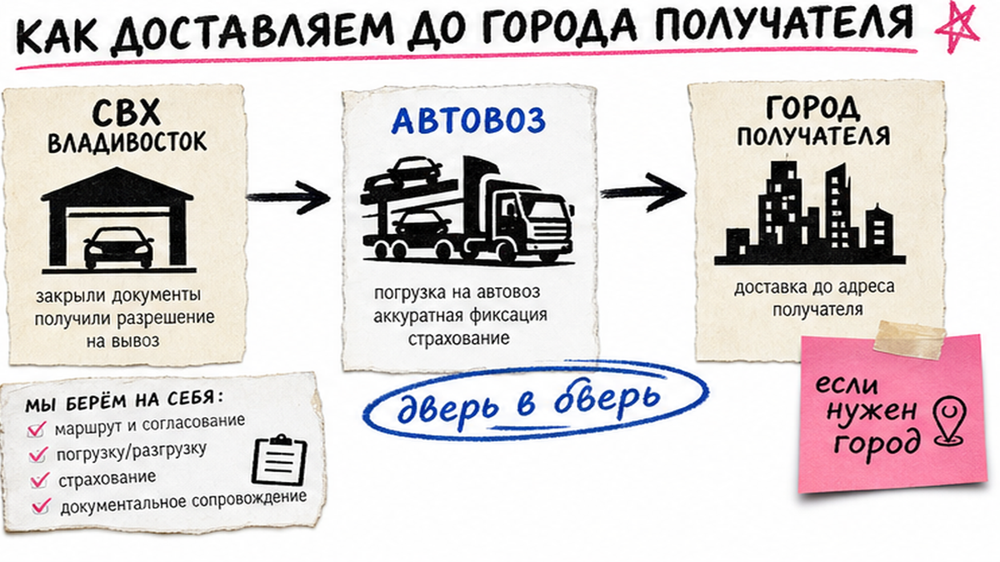

Машина уже на СВХ во Владивостоке или вот-вот выйдет с таможни, а вы всё ещё не понимаете, что выбрать: автовоз, железную дорогу или перегон своим ходом. Бесплатные сутки хранения тикают, в голове – страх переплатить за простой и получить царапины без акта. Ниже – сравнение трёх способов на 2026 год: сроки-ориентиры, стоп-правила перед сдачей и чек-лист, по которому вы сегодня выберете один вариант под свой город.
TL;DR / Быстрый инсайт: Сначала закройте статус на СВХ и остаток бесплатных суток, потом сравните автовоз, ж/д и перегон по сроку, точке выдачи и риску кузова. Для свежей машины после растаможки чаще берут автовоз или ж/д; перегон "потому что в поиске так ищут" часто съедает экономию топливом и сколами. Без акта, страховки груза и трекинга машину не отдавайте.
Типичная история: купили корейца под ключ, машина вышла с таможни, на складе временного хранения (СВХ – площадка после выпуска, пока авто не забрали) ещё есть "бесплатное окно". Человек гуглит перегон, бронирует билет – и только потом считает гравий, ОСАГО, ночёвки и сколы. Пока он думает, автовоз уже уезжает через неделю.
В поиске фразы про перегон и автовоз часто обгоняют общий запрос про доставку: люди ищут "гнать самому", хотя для свежей машины это чаще дороже по износу, чем кажется по роликам. Мы во Владивостоке разбираем логистику без геройства "9000 км сам" – с упором на кузов и план.

СВХ – не "парковка навсегда". Обычно бесплатно дают примерно 5–10 суток с выгрузки, дальше – сотни–тысячи рублей в сутки. Типичная ошибка – неделю торговаться за цену доставки и потом отдать ту же сумму за простой.
Схема без паники:
Выпуск с таможни → Статус СВХ и бесплатные сутки → Осмотр на площадке → Выбор способа → Акт и погрузка
Делать: закрывать выпуск и отправку в горизонте бесплатных суток. Не делать: ждать "ещё минус пять тысяч" неделями.

Три способа везут машину из Владивостока в ваш город по-разному. Цифры – ориентиры открытых прайсов на июль 2026, не гарантия договора. Перед оплатой переспрашивайте перевозчика.
| Критерий | Автовоз | Ж/д (вагон/сетка) | Перегон своим ходом |
|---|---|---|---|
| Срок до Москвы (ориентир) | примерно 12–23 суток с очередью | примерно 14–18 дней в пути + набор вагона | часто 10–14 дней чистой езды |
| Бюджет (ориентир, легковой) | порядок ~150 тыс. ₽ до Москвы | порядок ~175–225 тыс. ₽ по ж/д прайсам 2026 | "дешевле на бумаге" + топливо, жильё, износ |
| Точка выдачи | часто ближе к городу / по договору | станция (например, Селятино) + "последняя миля" | ваш двор, если доехали |
| Риск кузова | средний; нужны акт и страховка | ниже по сколам с дороги; важны погрузка/выгрузка | высокий: гравий, ДТП, усталость |
| Кому подходит | большинству после растаможки | когда важна сохранность и вы готовы к станции | опыт + тёплый сезон + простая машина |
Итоговый вердикт: Если машина свежая после таможни и вам жалко ЛКП – берите автовоз или ж/д. Перегон оставляйте на май–сентябрь и только осознанно, а не "кажется дешевле из видео".
Делать: заполнить таблицу под свой город двумя-тремя КП. Не делать: выбирать способ только по самой низкой цифре.

Автовоз – грузовик-платформа на несколько машин: сдали во Владивостоке, забрали ближе к дому. Ориентиры матриц 2026: до Москвы легковой часто около 18–23 дней и порядка ~150 тыс. ₽; до СПб чуть дольше; до Новосибирска обычно быстрее. Живой кейс Drive2 (Владивосток → СПб, декабрь 2025): 16 дней и около 212,5 тыс. ₽ с страховкой – один маршрут, не средняя по рынку.
В КП проверьте страховку груза, акт при погрузке, трекинг и очередь. Без этого – лотерея.
Делать: взять 2–3 предложения и сверить страховку, акт, трекинг. Не делать: отдавать машину "по звонку" без фиксации состояния.
Ж/д (вагон-сетка или контейнер) часто кажется "надёжнее". По открытым страницам Владивосток–Москва – примерно 14–18 дней в пути на ~9300 км. Но ж/д почти никогда не равно "до двора".
Например, выдача может быть на станции вроде Селятино – десятки километров от МКАД. Дальше нужна "последняя миля": эвакуатор или местный автовоз. Вагон иногда ждут, пока наберут состав. Контейнер обычно ещё медленнее (ориентир 20–28 суток).
По тарифам июля 2026 седан Владивосток–Москва встречается примерно в диапазоне 175–225 тыс. ₽; за неходовые часто просят доплату.
Делать: сразу спросить станцию выдачи и цену до вас. Не делать: сравнивать только "цену вагона" без последней мили.
Перегон своим ходом – вы или нанятый водитель едете через всю страну. В поиске выглядит красиво: "быстрее", "сам контролирую". На деле экономия часто съедается топливом, ночёвками и сколами.
Стоп-критерии "не гнать": зима; нет опыта дальних пробегов; электромобиль, нежный гибрид или дорогой кей-кар; нет запаса на поломку; жалко товарный вид. Комфортный сезон обычно май–сентябрь. Если всё же гнать: ОСАГО, документы на управление, запас на СТО и честный подсчёт билета плюс топливо.
Делать: считать полную стоимость перегона до брони билета. Не делать: выбирать перегон только потому, что "в выдаче все так ищут".
Растаможка и ЭПТС (электронный паспорт авто) закрываются до отправки по России. Перевозка по РФ не включает таможенные платежи – готовые суммы пошлин здесь не публикуем – актуальный расчёт берите у сопровождения под ваш лот.
Стоп-правила: нет акта и фото – не грузим; нет страховки – не грузим; при выдаче новые повреждения – не подписываем "чисто" до сверки.
Делать: снимать круговое видео с датой до передачи ключей. Не делать: подписывать выдачу "на бегу", если нашли скол вне акта.
Кроме прайса "Владивосток → город" часто всплывают: простой СВХ, погрузка/ПРР, ожидание рейса, станция + последняя миля, доплата за негабарит или неходовую, страховка отдельно. Впишите эти строки рядом с основной ценой.
Если машина ещё в заказе под ключ, логистику можно уточнить вместе с подбором: в каталоге avto-sales125.ru и в Telegram @avtosales125 – без форм на этой странице.
Делать: просить в КП "что входит" и "что отдельно". Не делать: платить 100% до понятного графика погрузки.
Критерий успеха: выбран один способ, есть ориентир срока до вашего города, собран список документов и стоп-правила (без акта, страховки и трекинга машину не отдаёте). Плюс ясно, когда перегон – ловушка.
Нужна доставка в связке с заказом из Азии – уточните маршрут в каталоге Авто-Сейлс. Мы во Владивостоке ведём машину от подбора до понятной выдачи по России.
Материал проверен: редакция Авто-Сейлс (эксперты по авто под заказ из Японии, Кореи и Китая).
Достоверность: сроки и тарифы-ориентиры сверены с открытыми материалами перевозчиков и гайдов на 24.07.2026 (сравнения доставки, ж/д прайсы, матрицы автовоза, разборы СВХ) и кейсом Drive2 Владивосток–СПб; перед договором цифры переспрашивайте у перевозчика. Актуальный расчёт под лот уточняйте у сопровождения заказа.
Ориентир 2026 – примерно 12–23 суток с учётом очереди. Уточните в КП, что считается стартом срока: сдача на площадке или выезд фуры.
Ж/д обычно бережёт от дорожного гравия, но важны погрузка/выгрузка и станция. Автовоз удобнее по точке выдачи. Без акта и страховки не отправляйте.
Зимой, без опыта дальних пробегов, на EV/нежном гибриде/кей-каре, если жалко товарный вид или нет запаса на поломку. Сначала посчитайте топливо, жильё и риск сколов.
Документы выпуска с СВХ, данные ЭПТС, договор с перевозчиком, акт с фото/видео, страховка груза. При перегоне – ОСАГО и право управления / доверенность.
Обычно нет. Закладывайте станцию и последнюю милю. Спросите стоимость этого участка до оплаты основного тарифа.
Узнайте остаток бесплатных суток (часто окно около 5–10 дней) и закрывайте осмотр плюс бронь в этом горизонте.
Да: подбор из Японии, Кореи или Китая и логистика через Владивосток обсуждаются в переписке без форм на странице. Сначала способ и стоп-правила, потом оплата перевозчику.